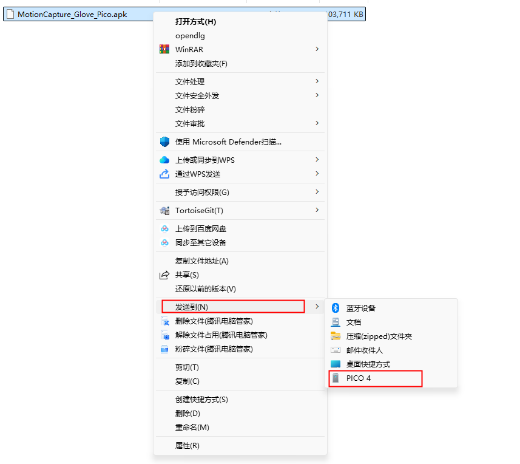
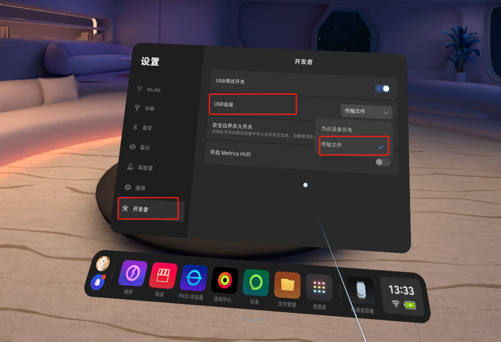
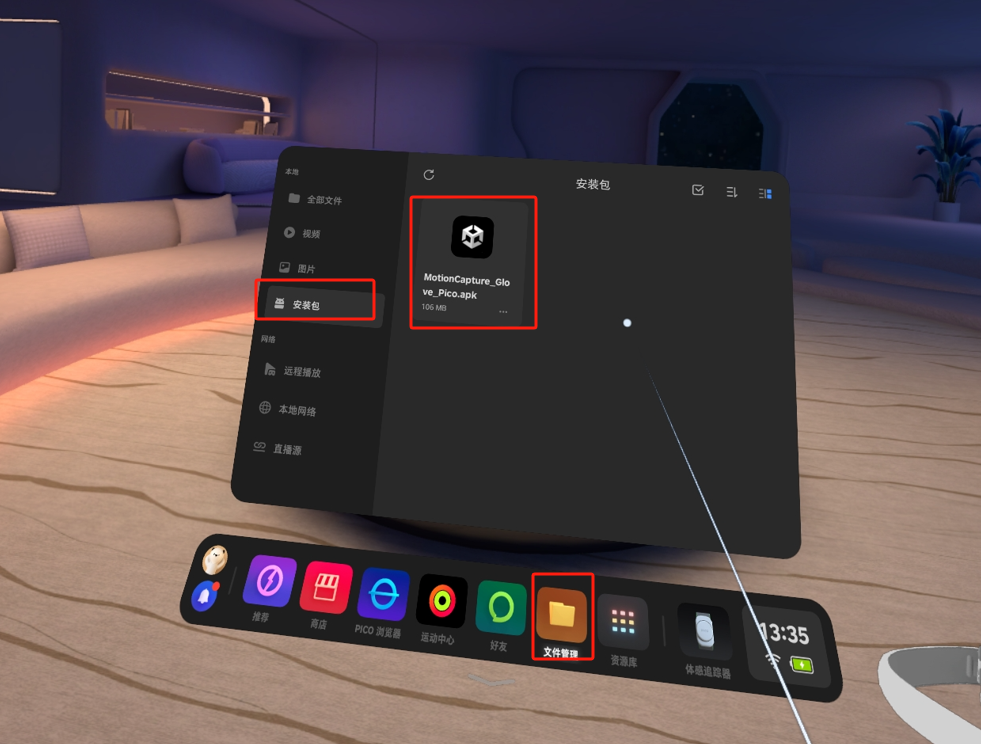
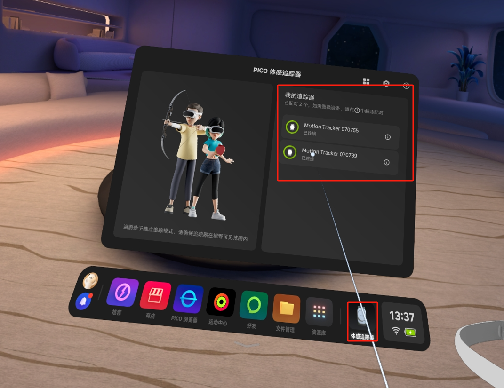
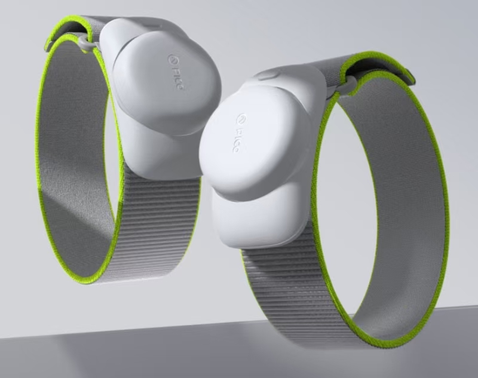
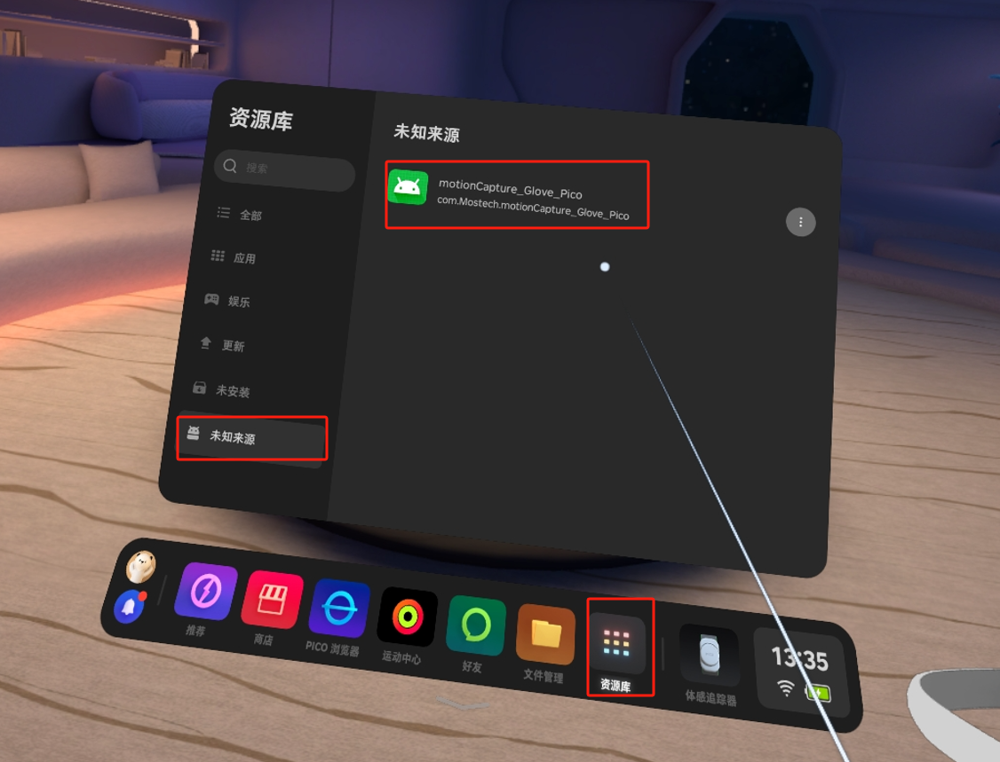
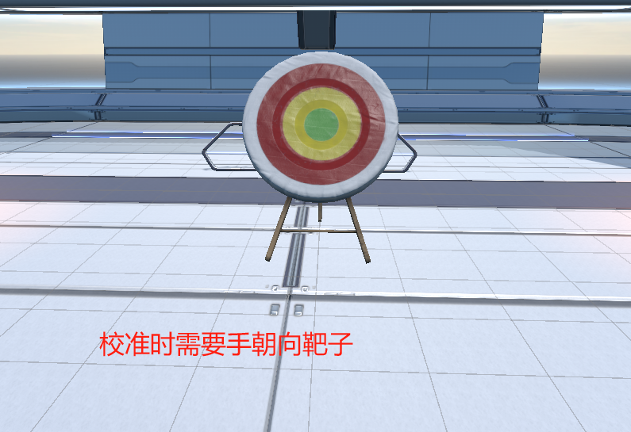

G1 + PICO
手套+Pico软件使用文档
1. 下载手套软件安装包
文件下载至电脑。
| APP | 版本 | 日期 | 更新日志 |
|---|---|---|---|
| MotionCapture_Glove_Pico_1.1.0.apk | V1.1.0 | 2024-11-04 | 【新增】 1. 支持自研手套设备 |
| MotionCapture_Glove_Pico.apk | V1.0.0 | — | 【新增】 1. 采集器手套实时数据 2. 姿势校准 3. 设备详情 |
| MotionCapture_Glove_Pico_InSituModel_1.0.0.apk | V1.0.0 | 2025-02-27 | 【新增】 1. 场景改为原地模式 |
2. 安装手套软件
2.1 安装包发送至Pico
使用数据线连接Pico与电脑，选中 MotionCapture_Glove_Pico.apk 文件，右键点击“发送到 PICO4”。
{width="4.25in" height="3.788798118985127in"}
如果找不到Pico设备，请在Pico中开启“开发者模式”并启用文件传输功能。
{width="5.625in" height="3.8541666666666665in"}
2.2 安装应用
在Pico中进入 文件管理 → 安装包，点击 MotionCapture_Glove_Pico.apk 进行安装。
{width="5.625in" height="4.270833333333333in"}
3. 使用手套软件
3.1 连接Tracker
使用软件前，请确保已连接两个追踪器。
打开体感追踪器软件，连接两个追踪器。
{width="5.625in" height="4.333333333333333in"}
{width="5.625in" height="4.447916666666667in"}
3.2 打开软件
进入 资源库 → 未知来源，打开 MotionCapture_Glove_Pico 软件。
可能遇到的问题：
- 提示Pico版本过低 → 请先升级Pico系统。
- 提示需要连接网络 → 请先连接Wi-Fi。
{width="5.625in" height="4.291666666666667in"}
3.3 软件使用流程
前置条件：Pico中已插入手套接收器，且两只手套设备已开机。
-
采集数据
点击“采集数据”按钮，查看得包率是否为0。若为0，请检查手套是否开机。
若得包率很低，请至PC端软件MotionStudio中切换频段。 -
姿势校准（手需朝向靶子方向）
若无上述问题，点击“姿势校准”按钮，姿势参考下图：
{width="6.125in" height="4.197916666666667in"} 手臂姿势：
 {width="6.125in" height="6.9375in"}
手部姿势：
{width="6.125in" height="6.9375in"}
手部姿势：
 {width="1.7916666666666667in" height="2.5416666666666665in"}
{width="1.7916666666666667in" height="2.5416666666666665in"}
 {width="1.9166666666666667in" height="2.5625in"}
{width="1.9166666666666667in" height="2.5625in"}